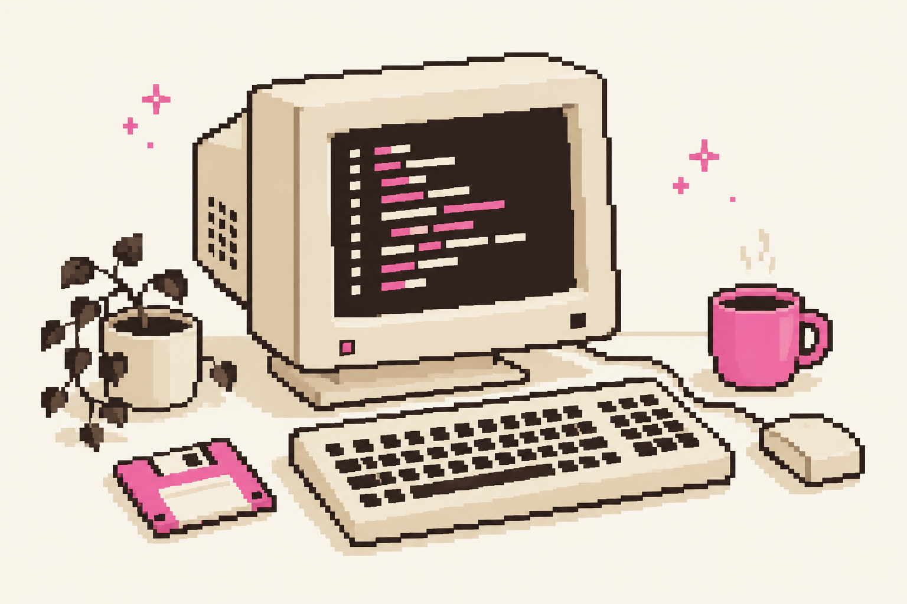

QUALITY ENGINEERING
QA Readme
A shared reference for software quality: test cases, bug reports, test evidence, BDD, and SQL examples.
★ Kellen Xavier — LadyDebug ★
Software & Quality Engineering.
I'm Kellen, also known as LadyDebug. I connect software development, test automation, and documentation — and share what I learn along the way.

C:\ladydebug\projects
A shared reference for software quality: test cases, bug reports, test evidence, BDD, and SQL examples.
A starting point for project documentation with AI, connecting business rules, Markdown, and a shared knowledge base.
A central repository of agent skills, shared across AI coding tools so one update can reach multiple workflows.
A hands-on test project pairing k6 scripts with a local Express application, with setup and execution instructions.
readme.txt / About me
My path has taken me from support and front-end work to software testing. Today, I bring those perspectives together through development, manual and automated testing, and technical documentation.
These repositories are where I explore tools, organize what I learn, and make practical knowledge available to others.
Explore the code, read the docs, or follow what I build next.